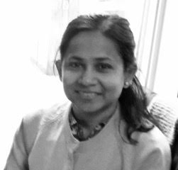

Somantika Datta
Department of Mathematics and Statistical Science
University of Idaho
CONTACT INFORMATION
email:
sdatta@uidaho.edu
Office: 320 Brink Hall
Fax: 208-885-5843

EDUCATION
Ph.D. (2007),
Mathematics
,
University of Maryland
, College Park
ACADEMIC POSITIONS
Professor (2023 - present),
Department of Mathematics and Statistical Science
,
University of Idaho
Associate Professor (2016 - 2023),
Department of Mathematics and Statistical Science
,
University of Idaho
Assistant Professor (2010 - 2016),
Department of Mathematics and Statistical Science
,
University of Idaho
Postdoctoral Researcher (2009-2010), Program in Applied and Computational Mathematics, Princeton University
Postdoctoral Researcher (2007-2009), Arizona State University
RESEARCH AREA
Applied harmonic analysis with focus on frame theory and signal processing.
Publications
If you are a student interested in working with me, feel free to email me to discuss opportunities. Click
here
to learn more.
TEACHING (FALL 2025)
Math5390 (Theory of Ordinary Differential Equationa)
Math5710 (Functional Analysis I)
EDITORIAL
2022 - present: Associate Editor for
Kyungpook Mathmematical Journal